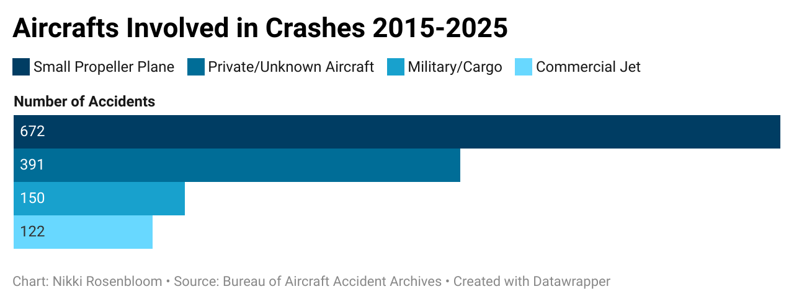

Plane crashes are frequently caused by pilot error, mechanical failure, air traffic control errors, and
weather conditions. But there has been an ostensible increase in the number of crashes over the past few months.
The deadliest crash in the last decade happened just one month ago, on June 12th, 2025. So why the recent uptick?
Regardless of improved aviation reporting standards, the databases available to the public are difficult to pick apart, as the reports contain several details that are not as important to the public.
The Bureau of Aviation Accident Archives sorts plane crashes around the world from the 1960s to today. The online database, founded in Switzerland, organizes the flights by date, operator, aircraft type, location, and fatalities. Over the past 10 years, there have been 1335 commercial plane crashes, with more than half of them (710 accidents) resulting in fatalities. 
According to the dataset, the Cessna and Piper-PA aircrafts make up the overwhelming majority of crashes. These aircrafts classify as small propeller planes, mostly used for short flights and/or personal endeavors.